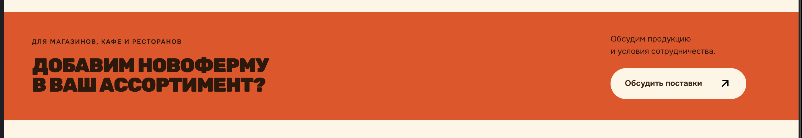
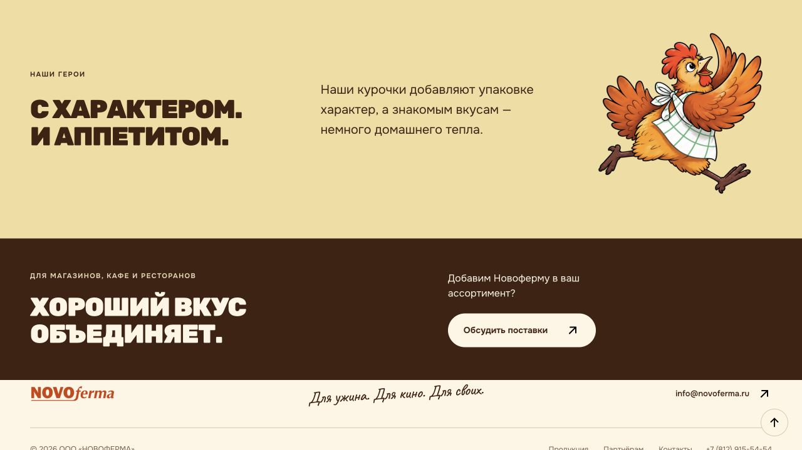
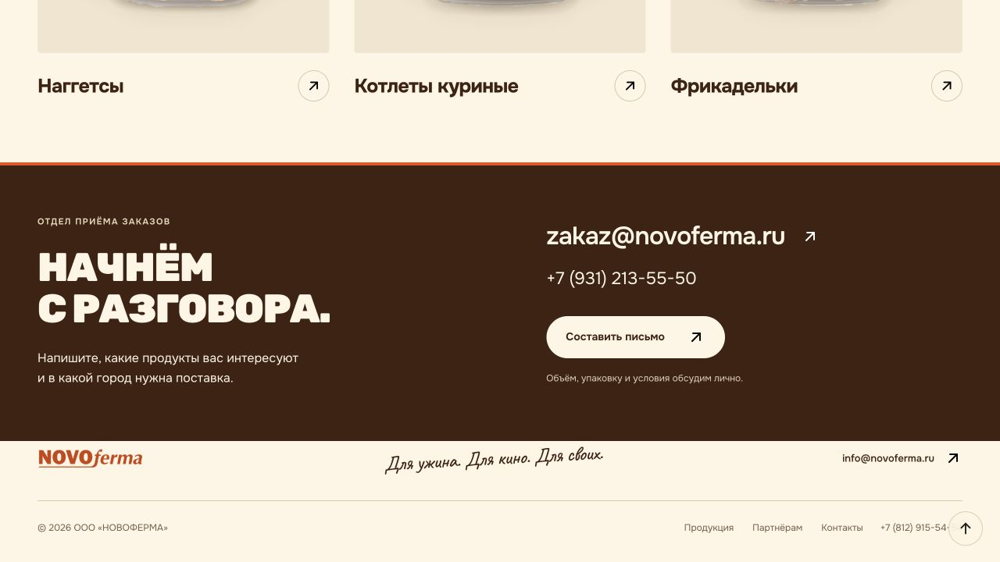
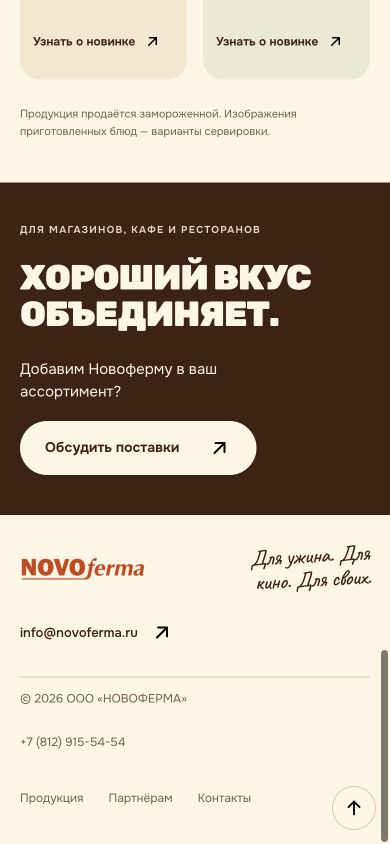

Новоферма / дизайн и сценарий / 16 октября 2026
Приглашение, которое продолжает разговор
Повторяемому блоку нужна собственная выразительная форма и конкретный деловой смысл. Один только новый цвет или новый слоган не объяснит, почему человеку стоит обратиться именно сейчас.
Разбор приложенного скриншота, актуальных локальных страниц и перехода к контактам. Это анализ и предложения: исходники сайта в рамках этого разбора не изменялись.
Что стоит переработать
На исходном скриншоте есть сильная база: фирменный цвет, плотная плакатная типографика, ясное обращение к магазинам и заведениям, одна хорошо заметная кнопка. Сам вопрос «Добавим Новоферму в ваш ассортимент?» понятен и подходит деловой аудитории.

Визуальный вес больше, чем объём сообщения. Большая оранжевая полоса привлекает внимание, однако после заголовка посетитель узнаёт только, что можно обсудить сотрудничество. Это почти повторяет подпись кнопки. Для такой площади хочется либо предметного образа, либо более полезной подводки.
Заголовок и действие разнесены. В широком кадре между ними большое пустое пространство. Воздух сам по себе полезен, но здесь он слабо связывает вопрос слева с ответом справа. Появляется ощущение двух отдельных фрагментов.
Блок не продолжает предыдущий раздел. После каталога человек уже видел продукты. После «О нас» он знакомился с компанией. В обоих случаях получает одинаковую общую фразу. Повторение на разных страницах нормально; слабое место — отсутствие смысловой адаптации.
Новый слоган тоже слишком общий. В текущей версии заголовок «Хороший вкус объединяет» стал короче и спокойнее на тёмном фоне. Но он подходит и покупательской коммуникации. Что речь идёт о бизнесе, объясняет прежде всего небольшой надзаголовок.
На странице «О нас» повторяется композиционный приём. В соседних жёлтом и коричневом разделах снова крупные строки слева и пояснение справа. Смена цвета не полностью меняет ритм. Добавление ещё одной большой курочки увеличит сходство с уже существующими сценами.
Что проверено в текущей версии
Точный повтор находится в каталоге и на странице «О нас». На главной — отдельный развёрнутый блок для бизнеса. На странице партнёров — самостоятельный контактный раздел. Поэтому нет необходимости превращать все эти места в одинаковый большой рекламный экран.
| Шаг | Наблюдение | Состояние |
|---|---|---|
| 1. «О нас» | Тёмный блок после раздела с персонажем. Короткий заголовок, вопрос справа, одно действие. | Понятен и читаем; смысл и композиция требуют развития. |
| 2. Переход к поставкам | Кнопка приводит непосредственно к контактному разделу страницы партнёров. Видны почта, телефон и действие «Составить письмо». | Маршрут работает. Следующий шаг можно яснее объяснить ещё до перехода. |
| 3. Каталог | Та же вставка расположена после новинок и примечания о замороженной продукции. | Место уместно; текст может лучше продолжать просмотр ассортимента. |
| 4. Телефон, 390 × 844 | Заголовок, пояснение и кнопка складываются в одну колонку. Блок занимает примерно 330 пикселей по высоте, видимого переполнения нет. | Композиция устойчива на проверенной ширине. Сильно увеличивать высоту не нужно. |
1. «О нас»: читаемо, но соседние разделы похожи

2. Контакты: полезный следующий шаг уже существует

3. Каталог: приглашение завершает просмотр продуктов

4. Телефон: компактность стоит сохранить

Пределы проверки: оценены сохранённые снимки, текущая разметка и переход по кнопке. Не проводились пользовательские интервью, анализ конверсии, полная клавиатурная проверка, тестирование скринридерами, всех размеров экрана и почтовых приложений. Визуальная читаемость не означает подтверждённое соответствие всем требованиям доступности.
Три направления для развития
Это словесные концепции для обсуждения, а не готовые макеты. Все три сохраняют кремовую, оранжевую и коричневую палитру, фирменную типографику и существующий характер бренда.
А. Фирменное приглашение
Идея: придать блоку характер короткого личного приглашения. Кремовая поверхность, плотный коричневый заголовок, один оранжевый акцент — например, край или деталь, напоминающая этикетку. Текст и кнопка собраны ближе друг к другу, читаются как одна мысль.
Тема упаковки связывает форму с продуктом без новой большой иллюстрации. Достаточно одной детали. Множество печатей, наклеек, наклонов и бумажных эффектов быстро превратят спокойный деловой переход в декоративный коллаж.
Магазинам, кафе и ресторанам
Для вашей полки.
Для вашего меню.Продукты из курицы и индейки для вашего бизнеса. Обсудим ассортимент, объём и условия поставки.
Обсудить поставки ↗
Что даёт: собственную узнаваемую форму, более явный деловой смысл, простой вариант для повторного использования. Компромисс: выразительность придётся получить точной типографикой, пропорциями и одной фирменной деталью; случайный прямоугольник с другим фоном будет выглядеть почти как сейчас.
Б. Продукты для вашего дела
Идея: показать небольшой предметный сюжет с реальной упаковкой Новофермы. Одна композиция вместо россыпи парящих продуктов: упаковка на спокойной поверхности и короткое обращение к бизнесу. На другой стороне — пояснение и кнопка.
Наши продукты.
Ваш ассортимент.Котлеты, наггетсы, фрикадельки и другие продукты Новофермы. Обсудим, что нужно вашему магазину или заведению.
Обсудить поставки ↗
Что даёт: предметность, связь с тем, что бизнес действительно закупает, возможность использовать уже имеющиеся фотографии упаковок. Компромисс: после каталога много упаковок будут повторением. Там лучше один небольшой акцент; более крупная сцена уместнее после рассказа о компании. На телефоне изображение не должно отодвигать действие на следующий экран.
В. Сразу к разговору
Идея: сделать финальный блок максимально прикладным. Короткий заголовок, подсказка о содержании обращения, видимая почта отдела заказов и одно действие для подготовки письма. Можно использовать тёмную поверхность с кремовым текстом и небольшой оранжевой деталью.
Обсудим ваш ассортимент?
Напишите, какие продукты вас интересуют и в какой город нужна поставка.
zakaz@novoferma.ru
Составить письмо ↗
Что даёт: ясный следующий шаг без повторного перехода к той же контактной информации. Компромисс: меньше эмоциональности; блок зависит от почтового приложения. Если выбрать эту модель, стоит сохранить видимый адрес и возможность его скопировать. Полноценная форма на сайте — отдельное решение, которому нужен работающий приём обращений.
| Критерий | Приглашение | Продуктовый сюжет | Прямой контакт |
|---|---|---|---|
| Главный акцент | Фирменная форма и обращение | Реальный продукт | Следующее действие |
| Повторение на страницах | Легко адаптировать текст | Нужна осторожность с повторами упаковок | Легко повторять, но выглядит более служебно |
| Риск | Избыточная бумажная декоративность | Ещё одна витрина вместо завершения страницы | Дублирование уже существующего контактного раздела |
Повторять форму, развивать содержание
Я бы сохранил одно семейство приглашений: одинаковые правила размера, отступов, кнопки и фирменной детали. Заголовок и подводка меняются в зависимости от того, что человек только что посмотрел. Это даст узнаваемость без ощущения скопированного рекламного хвоста.
| Страница | Роль приглашения | Пример текста |
|---|---|---|
| Каталог | Перейти от интереса к продуктам к вопросу о поставке | В ваш ассортимент. Обсудим интересующие продукты, объём и поставку в ваш город. |
| «О нас» | Продолжить знакомство с компанией деловым разговором | Познакомимся как партнёры? Расскажите о вашем магазине или заведении — обсудим сотрудничество. |
| Главная | Объяснить предложение для бизнеса | Существующий большой раздел «Давайте работать вместе» выполняет эту роль. Ещё одна копия универсальной вставки рядом не требуется. |
| Партнёрам | Дать возможность обратиться | Развёрнутый раздел «Начнём с разговора» уже завершает сценарий. Здесь важнее ясные контакты и понятная подготовка письма. |
| Карточка продукта | Сохранить интерес к конкретному продукту | При последующем развитии сценария можно подставлять название продукта в тему обращения. Это предложение, текущая передача продукта не реализована. |
На телефоне порядок остаётся простым: кому адресовано → заголовок → пояснение → кнопка. Декор не вклинивается между смыслом и действием. Кнопку можно сделать на ширину колонки, сохранив спокойную высоту и читаемый текст. Постоянно движущиеся изображения и автоматически меняющиеся фразы здесь не нужны; небольшого отклика стрелки при наведении достаточно.
Какое направление я рекомендую
Начать с фирменного приглашения. У него появится собственная форма, деловая задача станет понятнее, а блок не будет конкурировать с продуктовыми сценами и персонажами. Сохранить действующую кнопку «Обсудить поставки» и прямой переход к контактам.
Основной заголовок для первого макета: «Для вашей полки. Для вашего меню.» Для каталога можно использовать более короткое «В ваш ассортимент.», для «О нас» — «Познакомимся как партнёры?»
Первый макет стоит сравнить с текущей версией в двух реальных местах — после каталога и после раздела с курочкой. Отдельно красивый блок может оказаться лишним рядом с соседними секциями. Критерии выбора: заметно ли обращение к бизнесу, читается ли предложение без маленького надзаголовка, понятно ли действие, не возникает ли повтор изображения или композиции, сохраняется ли компактность на телефоне.
Сегменты «Магазинам» и «Ресторанам» имеют смысл как отдельные действия только при наличии разных полезных сведений или разных сценариев обращения. Две кнопки с одинаковым переходом добавят выбор без пользы. Прайс, образцы, сроки ответа и условия минимальной партии не стоит превращать в обещания, пока такая возможность не подтверждена.
Следующий практический шаг: нарисовать фирменное приглашение в контексте каталога и страницы «О нас», сохранив одну форму и две смысловые подводки.